Chapter2：Solutions of Equations in One variable
2.1 The Bisection Method
简单的二分法，重点是设置中止条件，不然有可能出现死循环。
那我们判断收敛就有相对误差与绝对误差，实际上是后者，但是为什么？
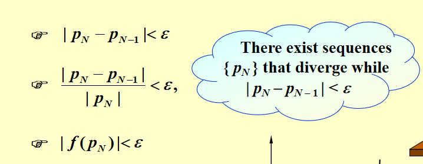
其实就是可以统一设定\(\epsilon\)，而不用通过量级情形更改。
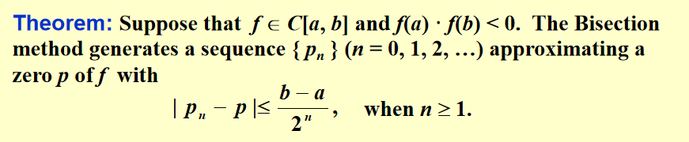
二分法的简单定理，其实就是要减小间隙，就增大\(n\)。
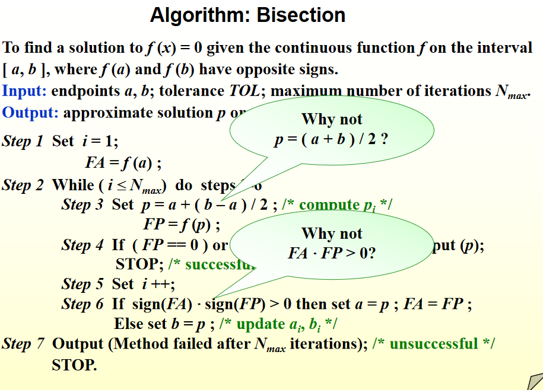
2.2 Fixed-Point Iteration(不动点迭代)
比如求f(x) = 0那么我们改造x = g(x)，左边是得到根，右边是得到不动点。
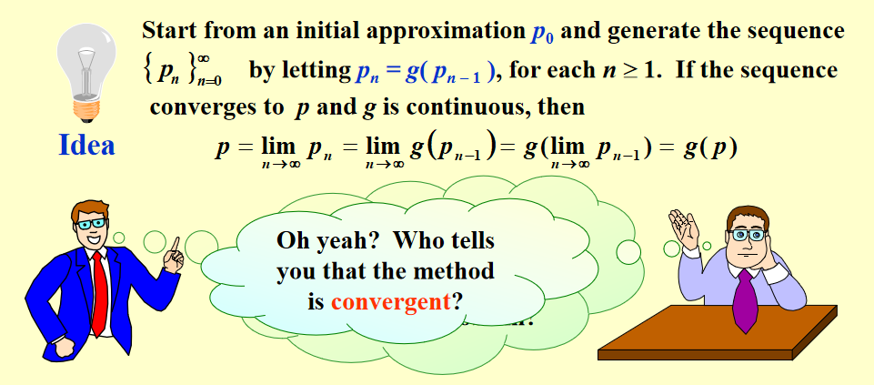
看起来是一个很简单的方法，就是不断for循环的把初始值代入，得出新的代入值，再代入。问题是不一定收敛。
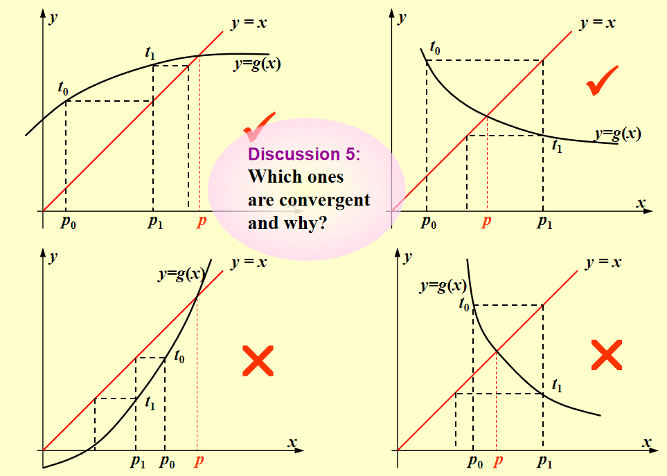
我们简单的观察发现可能与函数的导数有关系(也就是陡峭还是平缓的)
不动点定理：总之就是要满足存在一个常数\(0< k <1\)使得\(|g'(x)| <= k\)，同时注意前置条件的定义域与值域。
然后显然就是收敛速度的问题，收敛速度取决于\(k\)的大小，越小越好。
2.3 Newton's Method
基本思路:使用泰勒展开线性化一个非线性方程。
\(p_0\)是一个初始值且保证\(f(p_0) = 0\)，那么对于我们实际想得到的值是有\(p_0\)的泰勒展开的，我们的想法就是泰勒展开来近似根\(p\)
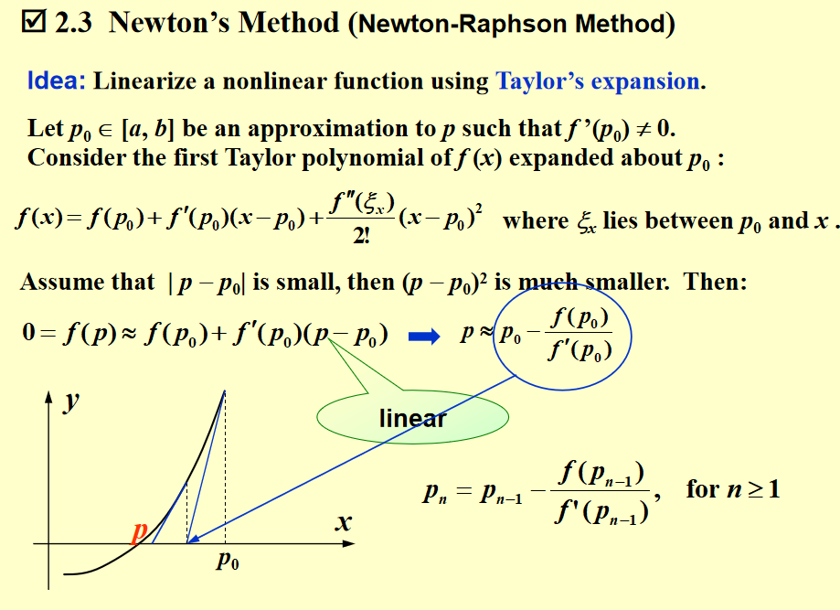
最后计算得到了一个迭代公式\(p_n = p_{n-1} - \frac{f(p_{n-1})}{f'(p_{n-1})}\)
其重点在于在点的附近。
对于证明，我们发现它不再需要把值域放到对应的区间里了。
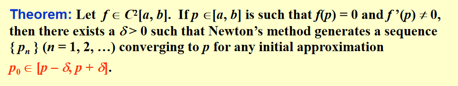
发现要求有二阶连续导函数，暂且不提。我们这个证明的叙述是求证存在一个区间，使得存在一个序列，使用牛顿法一定可以用这个序列\({p_n}\)收敛到我们的根\(p\)。
证明的基本逻辑是往不动点迭代上去靠。我们实际就是对于\(g(x) = x -\frac{f(x)}{f'(x)}\)进行收敛的证明。
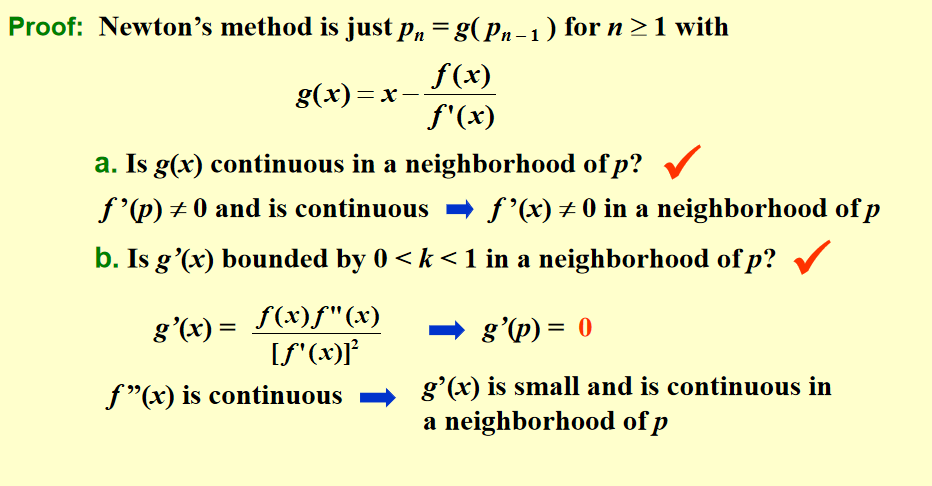
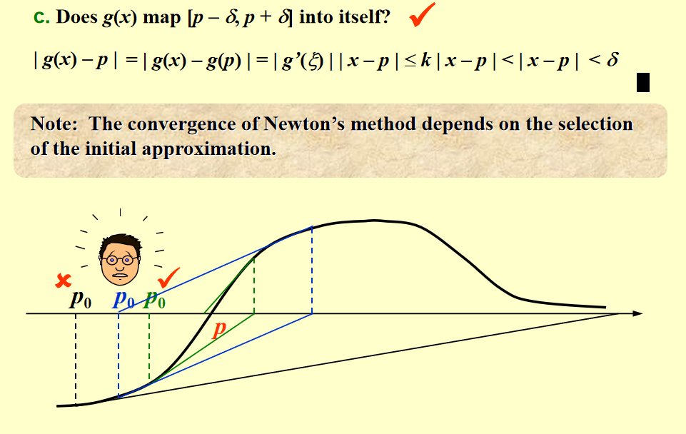
深刻利用了\(p\)点的局部性，因为这个区间很小，对于我们\(0< k< 1\)的证明就是认为总是能在这个区间里找到满足条件的\(k\)。
如果我们初值设太远了那就不能"map to itself"。
2.4 Error Analysis for Iterative Methods
对迭代方法的误差分析，如何度量。
假设我们利用迭代法算出了一个迭代法收敛于根\(p\)，定义\(\lim_{n->∞}\frac{|p_{n+1}-p|}{|p_n-p|^\alpha} = \lambda\)得到了常数\(\alpha\)与\(\lambda\)，我们可以注意到\(\alpha\)越大收敛越快。同时\(\lambda\)越小，同样的阶数，收敛速度更快。
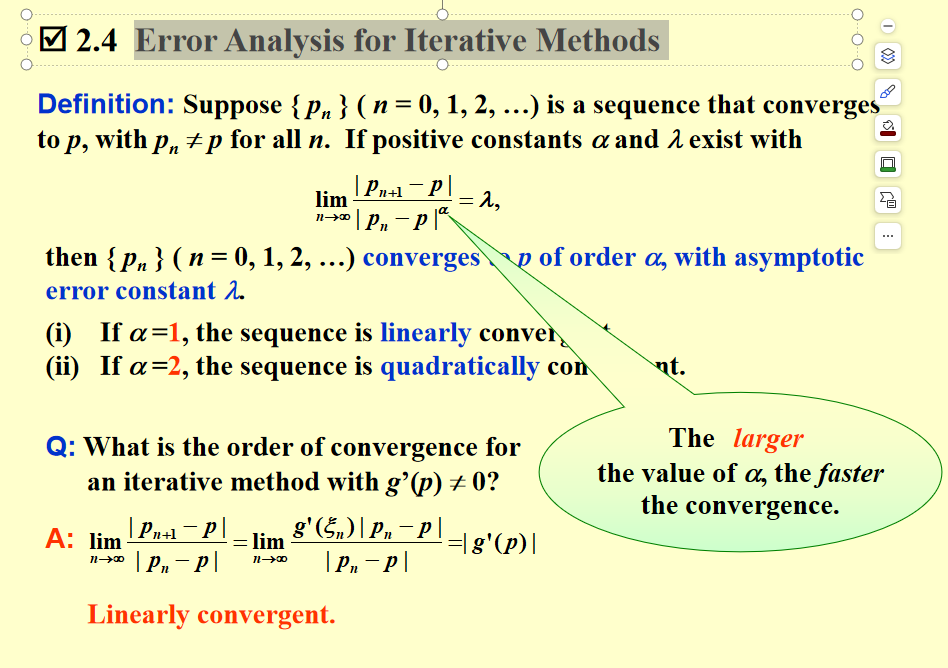
但是这是对于根导数不是0，如果是0呢，比如牛顿法？
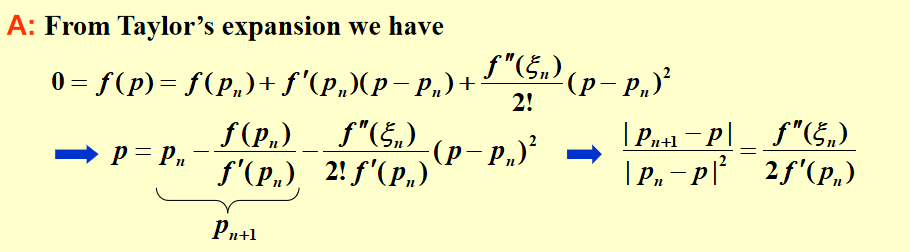
牛顿法是二次收敛，所以根附近，牛顿法是快于不动点迭代的。
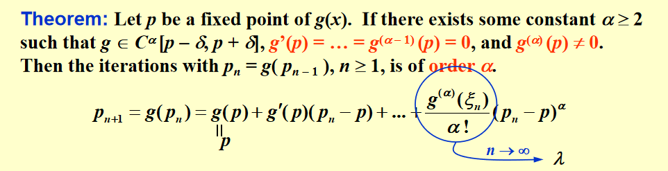
这个定理叙述了\(\alpha\)次的收敛，模仿之前的操作就可以得出，泰勒就行。
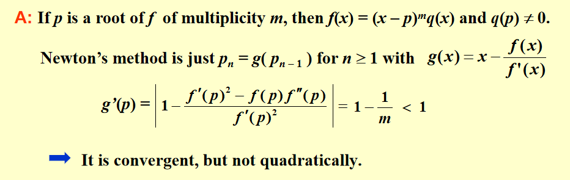
这个定理进行了一个牛顿法重根的分析，对于我们有\(m\)次的重根p，就可以将原函数写作\(f(x) = (x-p)^mq(x)\)且有\(q(p)\)不为0。
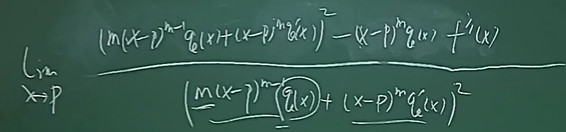
伟大的许老师进行困难的推演.jpg。
我们可以发现，在有重根的情况下，牛顿法是收敛的但不是二次收敛的，因此我们需要进行加速。
我们注意到，\(u(x) = \frac{f(x)}{f'(x)}\)，这样子\(f(x)\)的重根实际就只是\(u(x)\)的单根，再去对\(u(x)\)进行牛顿法。
\(g(x) = x - \frac{u(x)}{u'(x)} = x - \frac{f(x)f'(x)}{[f'(x)^2] - f(x)f''(x)}\)
2.5 Accelerating Convergence
Aiken's \(\delta^2\) Method
\(\hat{p} = p_n - \frac{(p_{n+1}-p_n)^2}{p_{n+2}-2p_{n+1}+p_n}\)
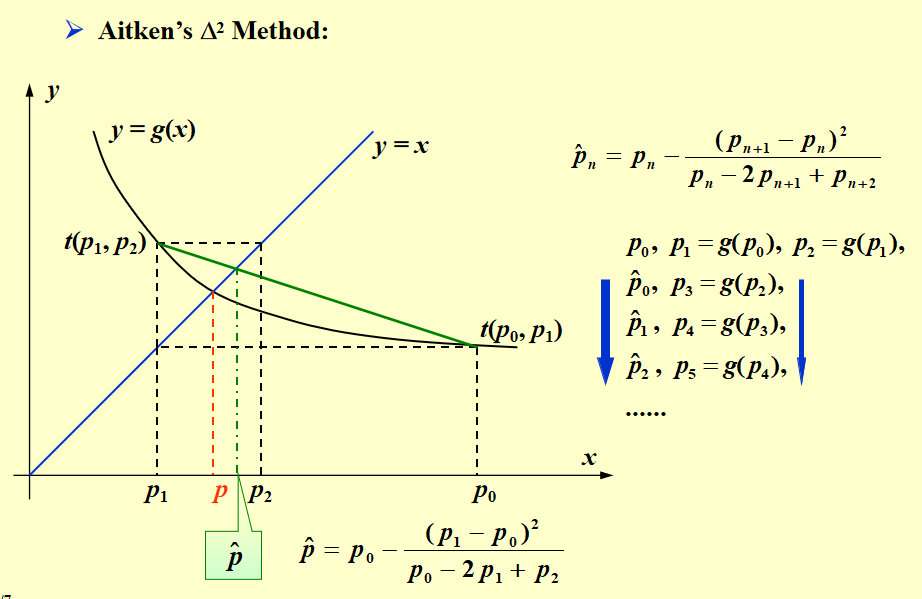
利用我们的一个\(\hat{p}\)来试图加快收敛速度。
所以我们研究一下其增长速度，定义了一个概念叫做前向差分：\(\triangle p_n = p_{n+1} - p_n\)，我们再递归地定义高阶差分为\(\triangle^k p_n = \triangle(\triangle^{k-1}p_n)\)
定义这个差分符号实际就是为了简化，我们就可以表示\(\hat{p_n} = p_n - \frac{(\triangle p_n)^2}{\triangle^2 p_n}\)
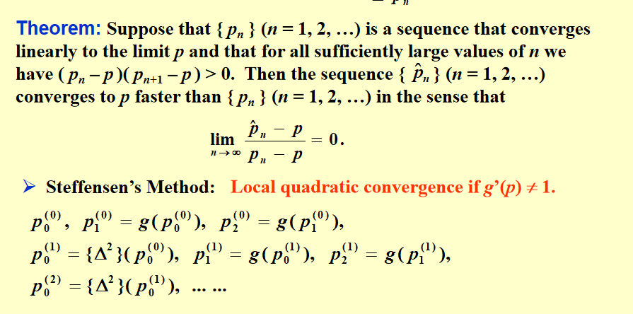
就是\(g'(p)\)不为1的时候是有二阶收敛的。